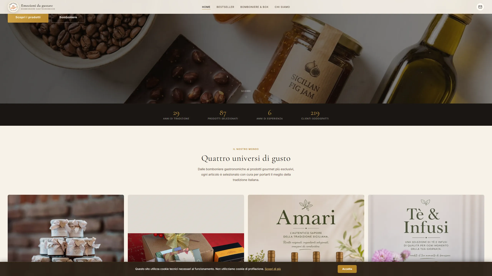
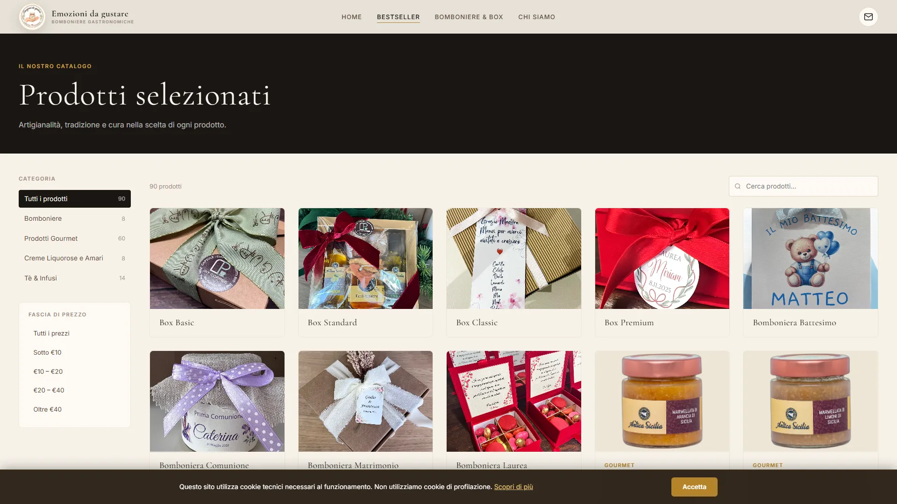
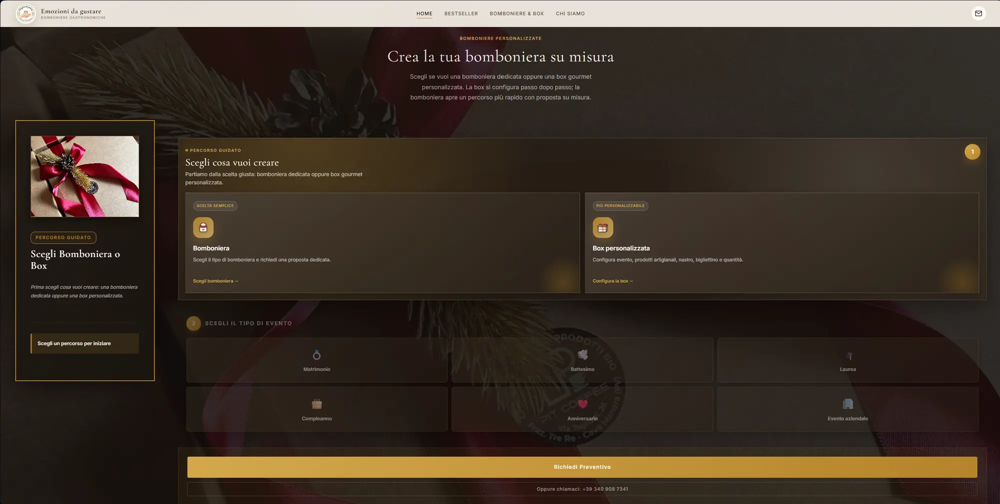

Sito e configuratore per Emozioni da Gustare, negozio di prodotti artigianali e bomboniere gastronomiche a Cava Manara (PV):
catalogo leggibile, universi di gusto e personalizzazione guidata per eventi.
Un cliente non compra una bomboniera da un elenco. Deve sentirsi guidato.
Emozioni da Gustare non vende solo prodotti: vende esperienze per eventi. Una bomboniera personalizzata,
un cesto gourmet o un ordine aziendale nascono da domande concrete — non da un catalogo freddo.
Il lavoro era trasformare una vetrina ampia in un percorso che aiutasse il cliente a capire da dove partire,
cosa personalizzare e come chiedere un preventivo senza sentirsi perso.
Scheda 02 · La soluzione
Cosa abbiamo costruito.
Homepage
Homepage calda, ma subito orientata all'azione
La prima schermata trasmette il tono artigianale del negozio e porta subito verso i tre universi: bomboniere, gourmet e idee regalo, con contatto chiaro per ordinazioni e consulenze.
home · scelta guidata

catalogo · universi di gusto

Catalogo
Catalogo diviso per universi di prodotto
Caffè specialty, miele biologico, confetture, cioccolato, specialità siciliane, amari, liquori, tè e infusi: categorie chiare che aiutano a scoprire senza affogare in prodotti.
Configuratore
Configuratore bomboniere personalizzate
Flusso guidato per scegliere evento, prodotti, imballaggio, nastro, bigliettino e confetti, con quantità minima e richiesta preventivo via email. Nessuna scelta forzata.
configuratore · bomboniera

Scheda 03 · Il cambiamento
Da «non so da dove iniziare» a «ho già il mio preventivo».
Il risultato non è una promessa gonfiata. È una frizione tolta: il cliente capisce l'universo di riferimento,
esplora i prodotti con calma e arriva al preventivo con le idee chiare.
Prima · catalogo statico
Dopo · scoperta guidata per evento e gusto
Bomboniere, gourmet e idee regalo non sono più un elenco unico: diventano ingressi chiari per bisogni diversi.
Prima · contatto generico
Dopo · preventivo configurato via email
Il configuratore raccoglie evento, prodotti, packaging e quantità prima ancora del primo scambio.
Prima · vetrina anonima
Dopo · fiducia artigianale e sensoriale
Immagini, copy e ritmo raccontano cura nella selezione, non solo prodotti sullo scaffale.
home · universi
Homepage: tono caldo e orientamento immediato
catalogo · categorie
Catalogo: universi di gusto chiari
configuratore · flusso
Configuratore: personalizzazione guidata
Scheda 04 · Sotto il cofano
Stack & approccio
Sito statico multi-pagina con contenuti strutturati per SEO locale, catalogo diviso per universi, configuratore guidato e contatto email/WhatsApp. Bello, sì — ma soprattutto chiaro per chi deve ordinare.
Utilizziamo i cookie per migliorare la tua esperienza di navigazione e analizzare il traffico del sito. Cliccando «Accetta tutti» acconsenti all'uso di tutti i cookie. Cookie Policy